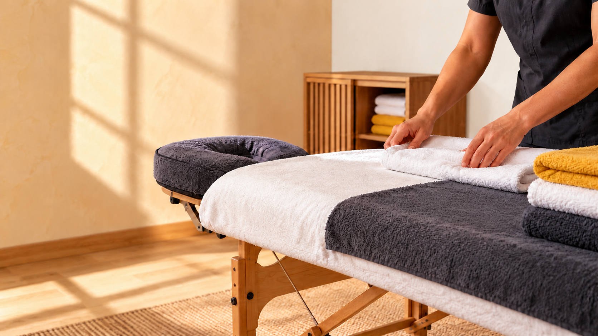

Masaje deportivo
Recuperación, descarga y trabajo profundo para personas activas.
Masaje deportivo y terapéutico personalizado con Sofía, masajista certificada con formación finlandesa.
Reservar por WhatsApp →
Tratamientos pensados para aliviar tensión muscular, mejorar la movilidad y acompañar la recuperación tanto del deporte como de la carga diaria.
Cada sesión se adapta a tus necesidades: desde una descarga después de entrenar hasta un trabajo más preciso sobre espalda, hombro, cadera o mandíbula.
Recuperación, descarga y trabajo profundo para personas activas.
Una experiencia completa para bajar el ritmo y liberar tensión acumulada.
Tratamientos enfocados en hombros, espalda, cadera, core y piernas.
Alivio para cuello, hombros, cadera y postura después de muchas horas sentado.
Trabajo especializado sobre mandíbula y masetero relacionado con bruxismo y tensión.
Técnica suave y rítmica para acompañar el bienestar corporal.
Escríbele a Sofía y encuentra el mejor momento para reservar en Fuengirola.
Escribir por WhatsApp →Disponibilidad de lunes a viernes de 9:00 a 19:00, sábados de 10:00 a 15:00 y domingos de 10:00 a 14:00.
WhatsApp / teléfono
+34 743 01 75 27
Reseñas
Ver perfil en Google Maps →